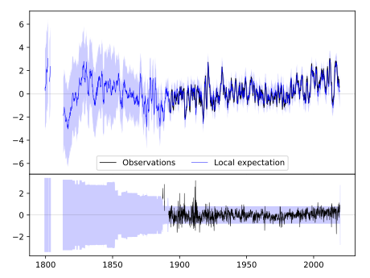
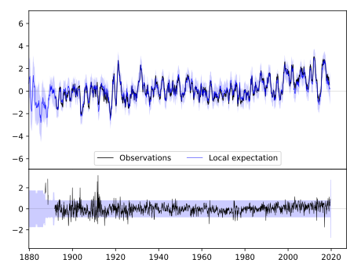
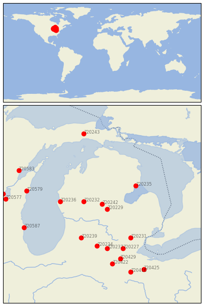

MT PLEASANT UNIV [USA]


| Neighbour | Name | Country | Distance | Lon/Lat | Years |
|---|
| 720242 | MT PLEASANT UNIV | USA | 2 | -84.8, 43.6 | 1887-2019 |
| 720229 | ALMA | USA | 27 | -84.6, 43.4 | 1887-2019 |
| 720232 | BIG RAPIDS WTR WKS | USA | 57 | -85.5, 43.7 | 1887-2019 |
| 720236 | HART 3 WSW | USA | 129 | -86.4, 43.7 | 1886-2019 |
| 720235 | EAST TAWAS | USA | 129 | -83.5, 44.3 | 1883-2019 |
| 720239 | KALAMAZOO STATE HOSP | USA | 158 | -85.6, 42.3 | 1876-2019 |
| 720231 | ANN ARBOR U OF | USA | 170 | -83.7, 42.3 | 1854-2019 |
| 720234 | COLDWATER ST SCHOOL | USA | 178 | -85.0, 42.0 | 1868-2019 |
| 720237 | HILLSDALE | USA | 189 | -84.6, 41.9 | 1880-2019 |
| 720227 | ADRIAN 2 NNE | USA | 199 | -84.0, 41.9 | 1870-2019 |
| 720579 | MANITOWOC | USA | 239 | -87.7, 44.1 | 1851-2019 |
| 720429 | WAUSEON WTP | USA | 240 | -84.1, 41.5 | 1870-2019 |
| 720422 | DEFIANCE | USA | 257 | -84.4, 41.3 | 1887-2019 |
| 720587 | RACINE | USA | 263 | -87.8, 42.7 | 1855-2019 |
| 720583 | OCONTO 4 W | USA | 292 | -88.0, 44.9 | 1888-2019 |
| 720577 | FOND DU LAC | USA | 298 | -88.5, 43.8 | 1871-2019 |
| 720416 | FINDLAY WPCC | USA | 302 | -83.7, 41.0 | 1886-2019 |
| 720243 | NEWBERRY 3S | USA | 305 | -85.5, 46.3 | 1891-2019 |
| 720425 | TIFFIN | USA | 307 | -83.2, 41.1 | 1873-2019 |
| 720584 | OSHKOSH | USA | 308 | -88.6, 44.0 | 1871-2019 |